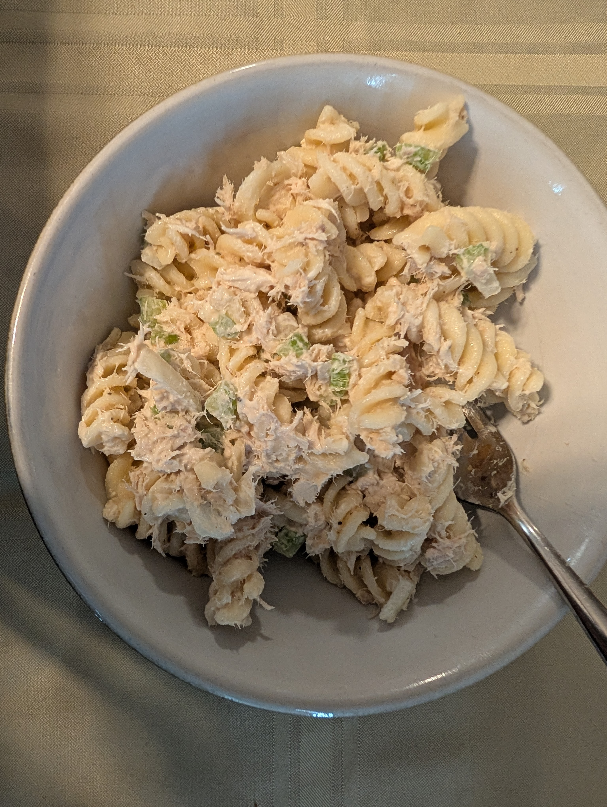

← All recipes

Tuna Salad
A quick lunch
Scale:
Ingredients
- 1¼ lb pasta
- 4 cans of tuna
- 4 celery stalks, diced
- 1 onion diced
- ¼ cup mayo
- ¼ cup miracle whip
- pepper to taste
Steps
- Boil pasta for 10 minutes
- mix all other ingredients in a bowl
- Strain pasta and cool with cold water
- mix everything together
Notes: